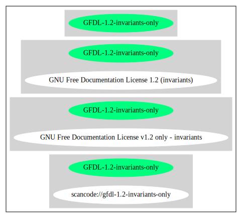

Key |
Value |
|---|---|
Fullname |
GNU Free Documentation License v1.2 only - invariants |
Shortname |
GFDL-1.2-invariants-only |
Rating |
Unknown, probably Attention or Stop or No-Go |
SPDX: http://spdx.org/licenses/GFDL-1.2-invariants-only.json
https://www.gnu.org/licenses/old-licenses/fdl-1.2.txt
{
"__impliedNames": [
"GFDL-1.2-invariants-only",
"GNU Free Documentation License v1.2 only - invariants"
],
"__impliedId": "GFDL-1.2-invariants-only",
"facts": {
"SPDX": {
"isSPDXLicenseDeprecated": false,
"spdxFullName": "GNU Free Documentation License v1.2 only - invariants",
"spdxDetailsURL": "http://spdx.org/licenses/GFDL-1.2-invariants-only.json",
"_sourceURL": "https://spdx.org/licenses/GFDL-1.2-invariants-only.html",
"spdxLicIsOSIApproved": false,
"spdxSeeAlso": [
"https://www.gnu.org/licenses/old-licenses/fdl-1.2.txt"
],
"_implications": {
"__impliedNames": [
"GFDL-1.2-invariants-only",
"GNU Free Documentation License v1.2 only - invariants"
],
"__impliedId": "GFDL-1.2-invariants-only",
"__isOsiApproved": false,
"__impliedURLs": [
[
"SPDX",
"http://spdx.org/licenses/GFDL-1.2-invariants-only.json"
],
[
null,
"https://www.gnu.org/licenses/old-licenses/fdl-1.2.txt"
]
]
},
"spdxLicenseId": "GFDL-1.2-invariants-only"
}
},
"__isOsiApproved": false,
"__impliedURLs": [
[
"SPDX",
"http://spdx.org/licenses/GFDL-1.2-invariants-only.json"
],
[
null,
"https://www.gnu.org/licenses/old-licenses/fdl-1.2.txt"
]
]
}